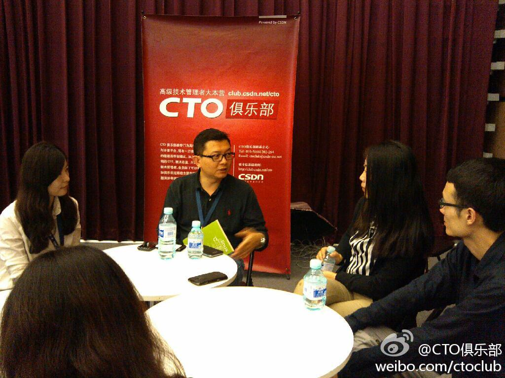
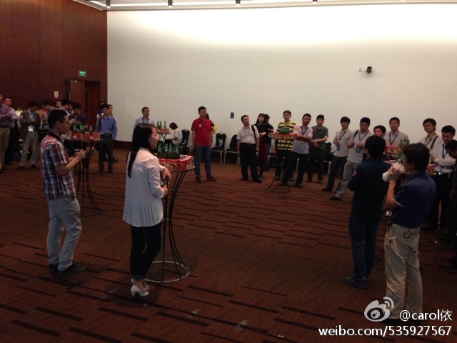
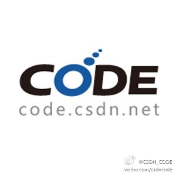

上台的人需要有强大的心里素质，批评是最容易干的事儿了。//@qyjohn_:哈。我只能够庆幸当时我不在台上了。//@蒋涛CSDN: 刚才把这意见转给了@程辉 ，@qyjohn_ 建议我们要给需要的讲师提供演讲培训 @Ada李力 可以来负责落实 //@蒋涛CSDN:其他人怎么看？@爱吹风的眼镜哥869:可以允许我说一句脏话来总结云计算开源论坛的圆桌环节的话，我想说简直一坨屎：程辉语无伦次，刘军委装傻摆谱，梁胜谭云雨雾，什么玩意 @云计算大会 @蒋涛csdn@云计算大会
//@CSDN:#云计算大会#第三天现场，大会讲师面对面交流！@CTO俱乐部:#云计算大会#第三天现场，欢迎到场CTO俱乐部会员提前短信预约与大会讲师面对面交流，上午11-12点奇虎360副总裁、首席隐私官@土人谭晓生 ，下午1-2点微吼CEO@林彦廷-微吼 ，发送讲师姓名+您所在公司名称+职位+姓名至18618138084 四层展台B14旁边休息区 @CSDN @CSDN云计算 @Ada李力 网页链接
//@Eric雪菲:这句我非常认同，没有权威，只有分享！应该是这样 //@孔令贤HW:有批评说明大家有期待。但我们也必须清楚，国内云计算没有权威，有的只是分享，所以，在期待的同时，需要大家共同分享，相互支持。 //@ben_杜玉杰:大家需要给这些国内开源布道者们更多时间和支持 //@Ada李力:上台的人@爱吹风的眼镜哥869:可以允许我说一句脏话来总结云计算开源论坛的圆桌环节的话，我想说简直一坨屎：程辉语无伦次，刘军委装傻摆谱，梁胜谭云雨雾，什么玩意 @云计算大会 @蒋涛csdn@云计算大会
谭总的首席隐私官头衔，国内少见。他定义信息和具体人对应起来才称为隐私。隐私信息处理中有四不能三要原则。国内的问题是没有相关立法，靠公司自觉，用户难信任。@CTO俱乐部:今天上午#云计算大会#现场，欢迎11-12点到四层展台B14旁边的休息区，与大会讲师面对面，奇虎360副总裁@土人谭晓生 已到现场，有兴趣的朋友赶紧过来吧！ @CSDN @CSDN云计算 @Ada李力 
回复@邓威:有机会让技术宅人聚在一起，大家都还是挺能聊的。 //@邓威:大家都是第一次见面，光注意聚小圈聊了，都忘了吃了。 //@Ada李力:现场人数正如预估50人左右，可是蛋糕，小食，啤酒还是剩了不少，大家战斗力不强啊。 //@carol依:闪亮登场@CSDN云计算俱乐部 @Ada李力 @CTO俱乐部@carol依:云计算俱乐部成立沙龙火热登场了哦 
回复@mysqlops:这是演讲内容和听众匹配的问题。不是说讲商业钱景的就是忽悠，讲技术才算干货。@爱吹风的眼镜哥869:可以允许我说一句脏话来总结云计算开源论坛的圆桌环节的话，我想说简直一坨屎：程辉语无伦次，刘军委装傻摆谱，梁胜谭云雨雾，什么玩意 @云计算大会 @蒋涛csdn@云计算大会
在旁听了一个多小时，很受启发。回头要试用下微吼平台，CSDN大量的讲座式线下活动其实可以放在线上做，以后的线下活动强调的是互动与交流。@CTO俱乐部:今天下午#云计算大会#现场，欢迎1-2点到四层展台B14旁边的休息区，与大会讲师面对面，微吼CEO@林彦廷-微吼 已到现场，有兴趣的朋友赶紧过来吧！ @CSDN @CSDN云计算 @Ada李力
明俊一生气，就拿不做饭来威胁。我问姣姣：“爸爸真要是不给我们做饭吃怎么办？”。姣姣一点儿不担心，说：“他饿了就会做饭的”。- 孩子真是能看到本质。我家三人，明俊是最讨厌在外面吃饭的，姣姣和我都能凑合，零食就能管饱。
记得以前内测时，@2gua 要过Code 邀请码@CSDN_CODE:【发码啦！有开源项目要托管就可索取】我们将向所有参与“2013年度中国优秀开源项目征集”活动的用户发送邀请码，未参赛但有开源项目要托管的用户也可申请！请发邮件至codesupport@csdn.net，注明要托管的项目名称及现有托管地址索取邀请码网页链接 @CSDN #邀请码# 